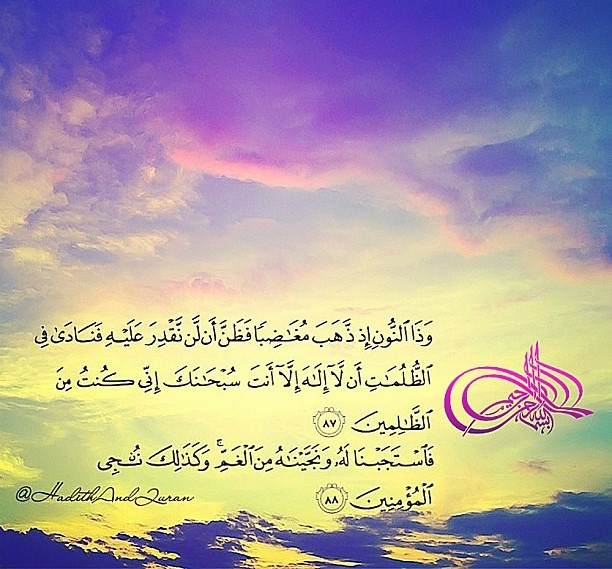
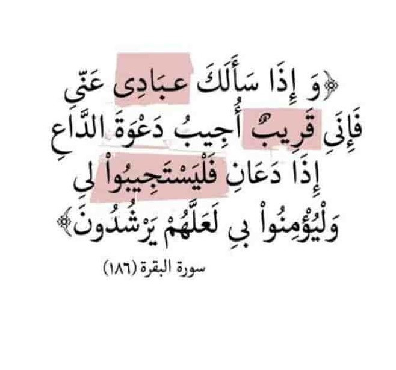
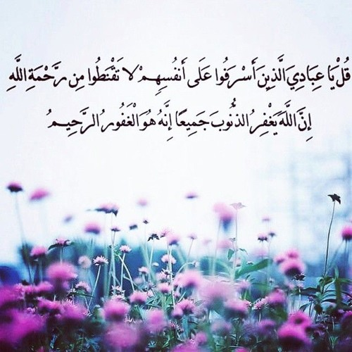
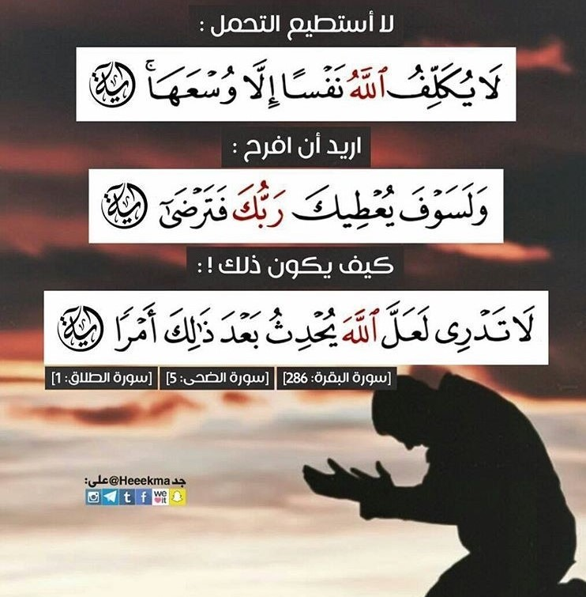
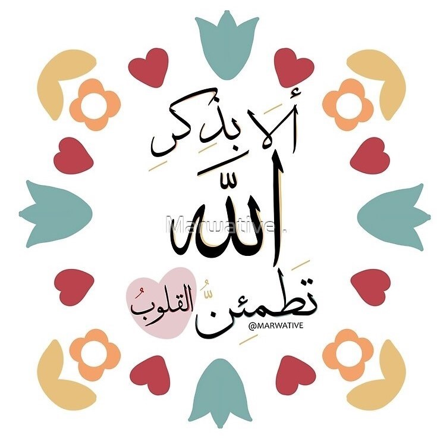

Something short and leading about the
collection below-its contents, the creator,
etc. Make it short and sweet, but not too
short so folks don't simply skip over it
entirely.
Card title
فضل الصلاة على النبي
أولًا: يؤجر المصلي على النبي - صلى الله عليه وسلّم- بعشر حسنات.
ثانيًا: يرفع المصلي على النبي -صلى الله عليه وسلم- عشر درجات.
ثالثًا: يغفر للمصلي على النبي- صلى الله عليه وسلم- عشر سيئات.
رابعًا: سبب في شفاعة الرسول -صلى الله عليه وسلم- له يوم القيامة.
خامسًا: يكفي الله العبد المصلي على رسول الله ما أهمّه.
سادسًا: تصلي الملائكة على العبد إذا صلى على رسول الله -صلى الله عليه وسلّم-.
سابعًا: الصلاة على النبي تعتبر امتثالًا لأوامر الله تعالى.
ثامنًا: سبب من أسباب استجابة الدعاء إذا اختتمت واستفتحت به.
تاسعًا: تنقذ المسلم من صفة البخل.
عاشرًا: سبب من أسباب طرح البركة.
9 mins

Card title
التفسير الميسر : واذكر قصة صاحب الحوت، وهو يونس بن مَتَّى عليه السلام، أرسله الله إلى قومه فدعاهم فلم يؤمنوا، فتوعَّدهم بالعذاب فلم ينيبوا، ولم يصبر عليهم كما أمره الله، وخرج مِن بينهم غاضبًا عليهم، ضائقًا صدره بعصيانهم، وظن أن الله لن يضيِّق عليه ويؤاخذه بهذه المخالفة، فابتلاه الله بشدة الضيق والحبس، والتقمه الحوت في البحر، فنادى ربه في ظلمات الليل والبحر وبطن الحوت تائبًا معترفًا بظلمه؛ لتركه الصبر على قومه، قائلا: لا إله إلا أنت سبحانك، إني كنت من الظالمين.
9 mins

Card title
وإذا سألك -أيها النبي- عبادي عني فقل لهم: إني قريب منهم، أُجيب دعوة الداعي إذا دعاني، فليطيعوني فيما أمرتهم به ونهيتهم عنه، وليؤمنوا بي، لعلهم يهتدون إلى مصالح دينهم ودنياهم. وفي هذه الآية إخبار منه سبحانه عن قربه من عباده، القرب اللائق بجلاله.
وسأل جماعة النبي محمد صلى الله عليه وسلم أقريب ربُّنا فنناجيه أم بعيد فنناديه: فنزل «وإذا سألك عبادي عني فإني قريب» منهم بعلمي فأخبرهم بذلك «أجيب دعوة الداع إذا دعان» بإنالته ما سأل «فليستجيبوا لي» دعائي بالطاعة «وليؤمنوا» يداوموا على الإيمان «بي لعلهم يرشدون» يهتدون.
9 mins

Card title
هذه الآية يفسرها ما بعدها وهو قول الله تعالى: (وَأَنِيبُوا إِلَى رَبِّكُمْ وَأَسْلِمُوا لَهُ مِنْ قَبْلِ أَنْ يَأْتِيَكُمُ الْعَذَابُ ثُمَّ لَا تُنْصَرُونَ) الزمر/54 إلى قوله تعالى: (بلى قَدْ جَاءَتْكَ آَيَاتِي فَكَذَّبْتَ بِهَا وَاسْتَكْبَرْتَ وَكُنْتَ مِنَ الْكَافِرِينَ) الزمر/59)، فالآيات تدعو إلى التوبة قبل إغلاق باب التوبة، وهو يُغلَق في وجه الإنسان إذا رأى ملك الموت. ويُغلق أيضاً إذا طلعت الشمس من مغربها قُبيل قيام الساعة، والتوبة المقبولة هي التي تتوفّر شروطها، وشروطها ثلاثة: ترك المعصية فورًا، والندم على فعلها، والعزم على عدم العودة إليها، وإن كان في المعصية حقٌّ لآدمي وجب شرط رابع وهو رد الحقِّ لصاحبه.
"فتاوى الشيخ نوح علي سلمان" (فتاوى تفسير القرآن/ فتوى رقم/13)
9 mins

Card title
*حين توشك على السقوط تجد إشارة تدلك أنّه ما كان سقوطاً وإنّما كانت رحمة الرب لتتعلم كيف تقف.
*لا تيأس ابدا من رحمة الله ولا تيأس من حياة ابكت قلبك وكانت قاسية عليك يوما ما وقل في قلبك بكل ايمان وادعو الله يا الله عوضني خيرا فالحزن يرحل بسجدة والفرح ياتي بدعوة.
*لا يقنط عباد الله المذنبين من رحمة الله تعالى، فالقنوط من رحمته أشدّ من الذنب.
*لا ينجينا الله -سبحانه وتعالى- من أهوال الحياة الدّنيا بحسنة أعمالنا، فأعمالنا تكاد لا تحقّق المطلوب من العبد، ولكن برحمته التي وسعت ملكوت كلّ شيء.
*إنّ من رحمـة الله عزّ وجلّ أنّه يعرف الحدود التي يمكن للبشر تحملها فلا يكلّف الله نفسًا إلا وسعها.
9 mins

Card title
فوائد ذكر الله سبحانه
لذكر الله سبحانه فوائدٌ وثمراتٌ كبيرةٌ، وفيما يأتي ذكر بعضها:
يعدّ ذكر الله تعالى قوتاً للقلب، وغذاءً للروح، وشفاءً للأسقام، وإزالةً للهموم.
.سببٌ لحصول النور في قلب الإنسان، ووجهه، وفي انفتاح أبواب المعرفة أمامه، وفي قُربه من الله تعالى. يلين قلب الإنسان، ويزيد في رزقه، وينزل عليه نصر الله تعالى، ومعونته. ذكر الله تعالى هو غرس بساتين الجنة، وبه تُبنى دورها كذلك. يعدّ عوناً للإنسان على طاعته، فهو يدفع الإنسان إلى القيام بالطاعات، ويصرفه عن المعاصي، والذنوب. ذكر الله -عزّ وجلّ- سببٌ في تنزّل الرحمة والسكينة على الذاكرين له، وسببٌ في حفوفهم بالملائكة. ذكر الله -عزّ وجلّ- سببٌ في ذكر الله للعبد، وحبّه له.